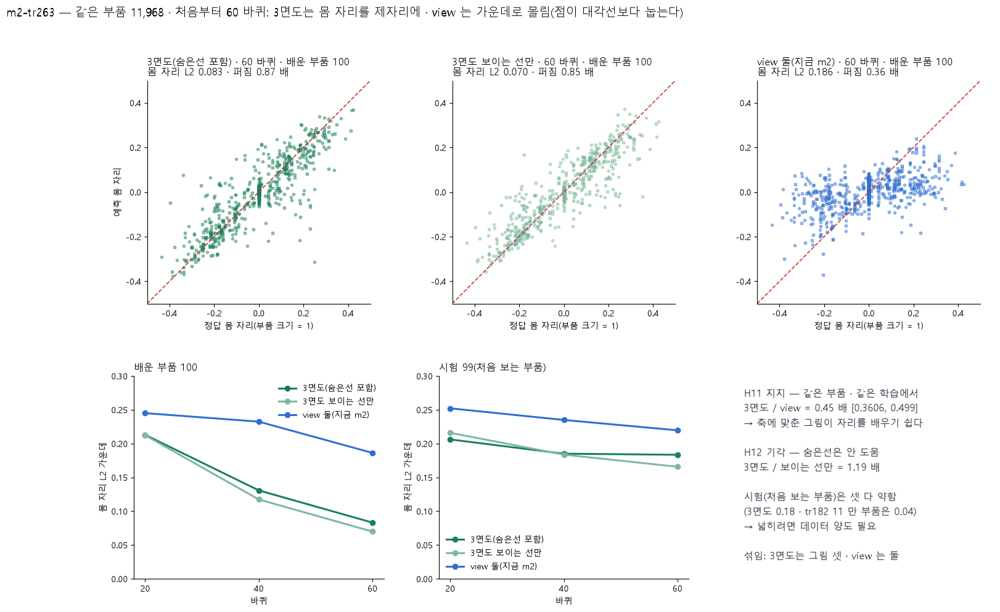

실험 m2_tr0263_h011_같은양
목표 G1.2 view 모음 → 파츠별 CAD code(CadQuery · 그 전 「3 면도 → 파츠별 CAD」 · 지금 M2 는 위 · 앞 · 옆 고정 세 장만 받음 → 아무 각도 N 장으로 바꿀 것 · 11-20) · G1 첫 제품 — 피규어 · 메카 사진 여러 장 + 치수 → 숨은선 3 면도 + 파츠별 CAD · G0 임의의 이미지 → CAD 코드 · 빌린 가정 4: 생성기기하 · 정답3D · 시점앎 · 정사영 · 갚는 계획: 입력 꼴을 고르는 진단 — 정답 그림 · 정답 각도 · 생성기 부품 · 고른 꼴은 m1 출력 · 원화CAD짝 시험지로 다시 봄 · 목표 시험지 값: 안 잼 (!)
같은 부품 · 같은 학습으로 처음부터 배우면, 3면도 입력 망의 자리가 view 입력 망보다 훨씬 정확한가 — 감사262 의 「3면도 1 화소」 는 그림 꼴 덕인가, 데이터 양 덕인가, 숨은선 덕인가?
판정 · H11 지지(같은 부품 11,968 · 처음부터 60 바퀴 · 배운 부품 몸 자리 3면도 / view 0.45 배) · H12 기각(숨은선 무관 · 1.19 배) — 자리를 배우기 쉬운 것은 축에 맞춘 그림 꼴 · view 는 같은 조건에서 가운데로 몰림 · 처음 보는 부품은 셋 다 약해 넓히려면 데이터 양도 필요(3면도 시험 0.18 대 tr182 11 만 0.04) · 섞임: 3면도는 그림 셋 · view 는 둘 — 다음 3면도 두 장 갈래로 장 수를 가름
| 가설 | 주장 | 결과 | 근거 |
|---|---|---|---|
| H11 | 자리 정확도를 정하는 것은 그림 꼴(축에 맞춘 3면도)이지 데이터 양이 아니다 — 같은 부품 수에서도 3면도 망이 훨씬 정확하다 | 지지 | 3면도 0.083 · view 0.186 · 좌표별 3면도 0.032 · 0.023 · 0.018 대 view 0.092 · 0.053 · 0.027 · 퍼짐 0.87 대 0.36 · 종류 둘 다 0.971 · 치수 0.11 대 0.137 · 시험 3면도 / view 0.835 [0.723, 0.987](0.183 대 0.220) · 20 바퀴 0.213 대 0.245 · 끝 손실 2.51 대 3.01 |
| H12 | 숨은선이 몸 자리를 읽는 데 돕는다 | 기각 | 3면도보임 배운 부품 0.070 · 시험 0.166(3면도 0.083 · 0.183) · 손실 2.52 대 2.51 |
분석
한 줄로
물음: 감사262 의 「3면도 망은 1 화소」 는 그림 꼴 덕인가, 10 배 많은 데이터 덕인가, 숨은선 덕인가?
답: 그림 꼴 덕이다(H11 지지). 같은 부품 11,968 개 · 같은 학습 · 처음부터 60 바퀴에서, 배운 부품의 몸 자리 오차가 3면도는 view 의 0.45 배다. 3면도는 몸 자리를 제자리에 놓고, view 는 같은 조건에서 가운데로 몰아 낸다. 숨은선은 돕지 않는다(H12 기각). 다만 처음 보는 부품에서는 셋 다 약해서, 넓히려면 데이터 양도 필요하다.
왜 이 실험을 했나
m2-tr262 에서 회전을 계산으로 빼도 view 망은 몸 자리를 가운데로 몰아 냈다. 감사262 가 견준 3면도 망(tr182)은 부품 11 만 개로 배웠고 숨은선까지 그린 그림을 받아, 그림 꼴의 차이인지 가를 수 없었다. 우리 목표는 view 모음에서 파츠 CAD code 를 짓는 m2 다 — 어떤 입력 꼴을 받아야 하는지 정하는 진단이다.
바꾼 것 하나
입력 꼴 세 갈래: 3면도(위 · 앞 · 옆 · 숨은선 포함 · tr182 꼴) · 3면도 보이는 선만(숨은선 지움) · view 둘(방위 · 고도 각도 + 보이는 선 · 지금 m2). 세 갈래 모두 같은 부품 11,968 개 · 처음부터(무게 없이) · 같은 손실 · 학습률 3e-4 · 60 바퀴.
결과

| 60 바퀴 · 배운 부품 100 | 3면도 | 3면도 보이는 선만 | view 둘 |
|---|---|---|---|
| 몸 자리 오차 | 0.083 | 0.070 | 0.186 |
| 퍼짐(예측 몸끼리 거리 / 정답) | 0.87 배 | 0.85 배 | 0.36 배 |
| 시험 99 몸 자리 오차 | 0.183 | 0.166 | 0.220 |
| 가설 | 결과 | 판정선 | 판정 |
|---|---|---|---|
| H11 3면도 / view(배운 부품) | 0.45 [0.36, 0.50] | ≤ 0.6 지지 · ≥ 0.9 기각 | 지지 |
| H12 3면도 / 보이는 선만 | 1.19 [1.01, 1.38] | ≤ 0.8 지지 · ≥ 0.95 기각 | 기각 |
몸 자리 오차는 정답 · 예측 둘 다 있는 몸의 거리(부품 크기 = 1)를 모은 가운데값이다.
왜 이렇게 나왔나
확인한 것
- 20 바퀴에서는 셋 다 몸들을 가운데로 몰았다(퍼짐 0.07 ~ 0.20 배). 3면도는 40 · 60 바퀴에 몰림이 풀리며 제자리로 갔고, view 는 60 바퀴에도 0.36 배다.
- 종류 맞음은 셋 다 0.97 로 같다. 차이는 숫자(자리) 쪽에만 있다.
- 숨은선을 지운 3면도가 오히려 조금 낫다. 숨은선은 회색 빗금 영역이라 자리를 읽는 데 보탬이 안 된다.
- 처음 보는 부품(시험)은 3면도도 0.18 이다. 같은 꼴을 11 만 부품으로 배운 tr182 는 0.04 였다.
짐작 (아직 확인 안 함)
- 3면도는 몸의 가로 · 세로 자리가 그림의 화소 자리와 그대로 맞아 「어디 있나」 를 바로 읽는다. 비스듬한 view 는 몸끼리 겹쳐 보이고 자리가 그림 자리와 곧바로 맞지 않아, 확실하지 않을 때 가운데로 숨는 쪽으로 간다.
한계
- 3면도는 그림 셋, view 는 둘이다 — 장 수 차이가 섞여 있다.
- 한 번 · 60 바퀴 · 처음부터라 셋 다 덜 배운 상태다.
- 3면도 보이는 선만 갈래는 GPU 를 나눠 쓰느라 느려 10 바퀴에서 멈추고 같은 씨앗으로 GPU 0 에서 처음부터 다시 돌렸다.
배운 것과 다음
m2 가 몸 자리를 배우기 쉬운 것은 축에 맞춘 그림이다. 숨은선은 필요 없다. 처음 보는 부품까지 넓히려면 데이터 양도 필요하다.
- 장 수 섞임 풀기: 3면도 두 장(위 · 앞) 갈래를 같은 조건으로 — 셋 대 둘의 몫을 뺀다.
- 입력 꼴 결정(사용자): m2 앞에 「view 를 축에 맞춘 꼴로 펴는」 단계를 둘지, m2 가 비스듬한 view 를 그대로 받게 하고 몰림을 구조로 막을지.
- 데이터 양: 고른 꼴로 부품을 늘려(생성기 11 만) 처음 보는 부품 성적을 본다.
실험 기록
- 카드 · 같은양263.py(흐름 · 학습 · 재기 · 그림) · 잼.json · 흐름.png · 결과.png · 원본 out/설명/캐드부품/모델263/(3면도 · 3면도보임 · view)/(머리_020 · 040 · 060 · 곡선) · 학습_*.log